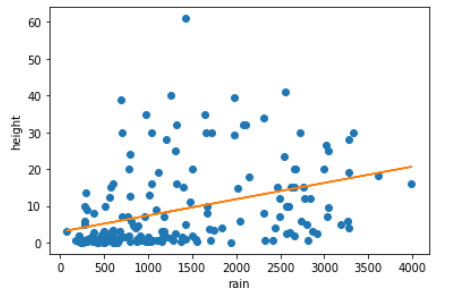

Linear Regression
A powerful tool for finding the implications of a data set. More formally, "a linear approach for modelling the relationship between a scalar response and one or more explanatory variables" (Wikipedia). For our example, we will be developing linear regressions to analyze plant height data with various explanatory variables to determine which has the most explaining power for the data.
Scatter Plots
In the plant height assignment, scatter plots were used to make the data point correlation to the regression line clear. Having a scatter plot shows how the data interacts with the line of best fit once drawn since it expresses the non-linearity of the data and in what ways the line characterizes it and/or makes some unfair assumptions about the data. Clarity aside, plotting the diagram for a scatter plot is simple and makes makes debugging simple.
These are the following scatter plots we generated from the data:

Line of Best Fit
The line of best fit of the scatter plot is simply the line that minimizes the variance off the line. There are several misconceptions regarding the line of best fit. It does not always go through the first and last points on a scatter plot, those points can be outliers too! Likewise, steeper trend lines do not indicate stronger correlations necessarily. To calculate it, the least square method is used. The slope is calculated where the sum of the product of errors of the x-mean and y-mean is then divided by the sum of the errors of the x-mean squared. The y-intercept is then just the y-mean minus the slope times the x-mean.
In the scatter plot diagrams to the left, the lines of best fit were computed and shown in orange. As can be seen, they seem to fit the average of the data points well. These lines will be used to compute the y-line value for standard error.
The code below is used to compute these:
Standard Error
The standard error of a sample mean is the standard deviation of the mean for the dataset. In the plant heights dataset, we measure the standard error of the line mean and the y mean for calculating the r squared term. This is just the sum of differences between the discrete points and their predicted value by the line or the mean respectively. The code below is used for this:
R-Squared
The coefficient of determination, or R-Squared, is a statistical measure of how well the variance of one measure of a data set determines the variance of another measure. It is computed by calculating 1 - SE_line / SE_y. The highest value of R-squared gives us what is statistically likely to be causing the trend.
In the plant assignment, we calculated R-squared for each scatter plot and compared them to find the maximum and explained why. The temperature graph turned out to have the highest statistical correspondence of the variance. The code for computing R-squared for each data set is shown on the left.
Total Code